Eastman Johnson, Negro Life at the South, 1859
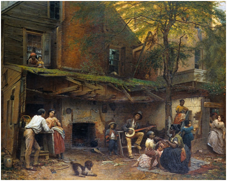
Eastman Johnson, Fiddling His Way, 1866
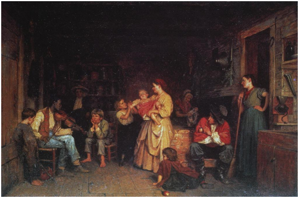
Eyre Crow, Slave Market in Richmond, VA, 1853
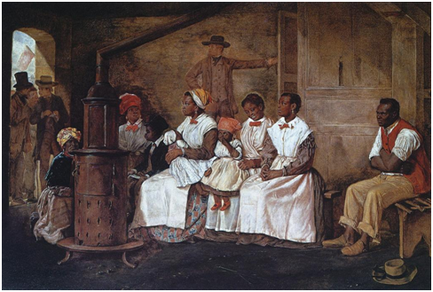
King and Baird, Emancipation (Political Cartoon), 1865
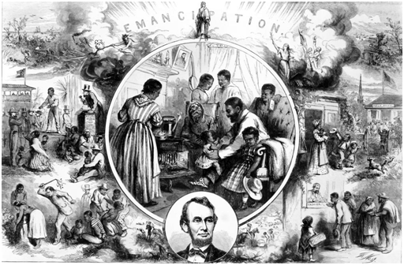
William Wetmore Story, The Lybian Sibyl, 1861/8
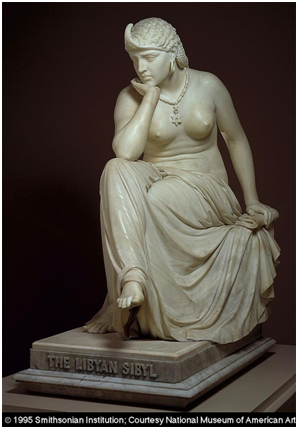
Edmonia Lewis, Forever Free, 1867
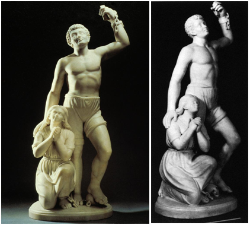
John Quincy Adams Ward, The Freedman, 1863
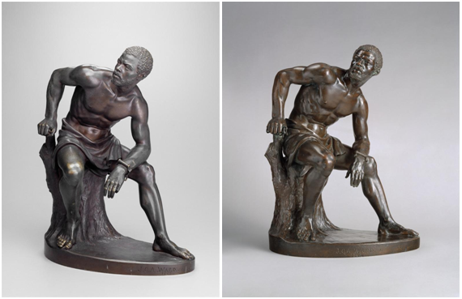
Thomas Waterman Wood, A Bit of War History (The Contraband, The Recruit, and The Veteran, 1865-6
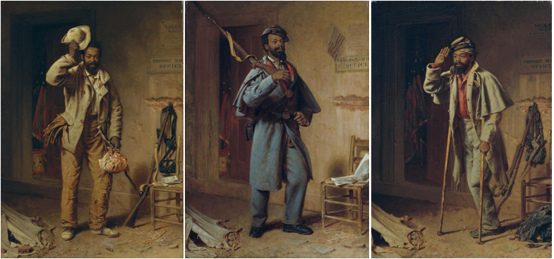
Thomas Ball, Emancipation Memorial (Freedman's Memorial), 1876
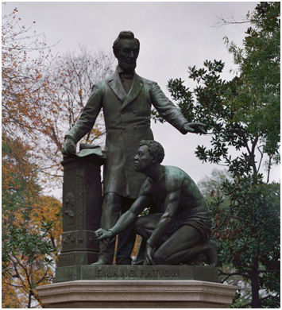
Augustus Saint Gaudens, The Shaw Memorial, 1884-1897
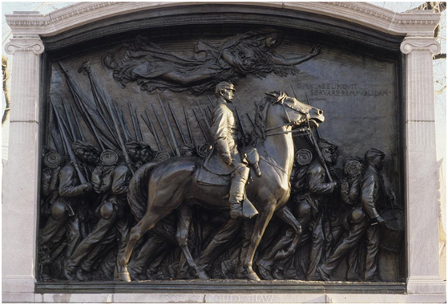
Robert Duncanson, Land of the Lotus Eaters, 1861
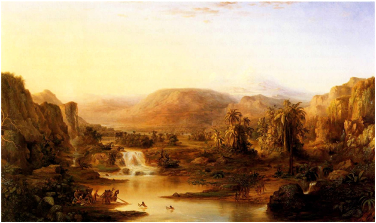
Robert Duncanson, Uncle Tom and Little Eva, 1863
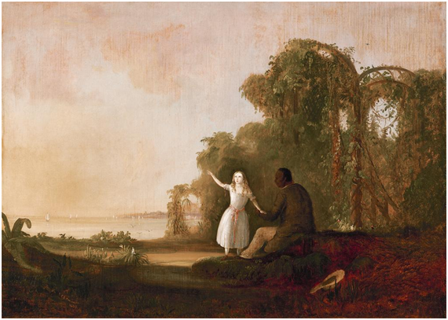
Edward Bannister, Under the Oaks, 1876
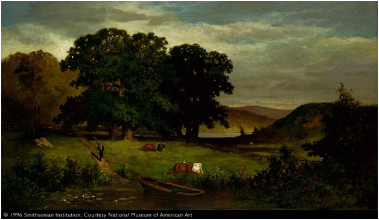
Henry Ossawa Tanner, The Banjo Lesson, 1893
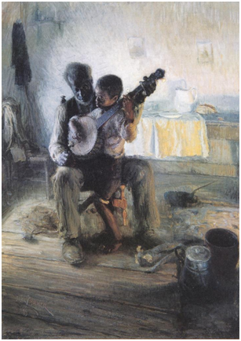
Henry Ossawa Tanner, The Thankful Poor, 1894
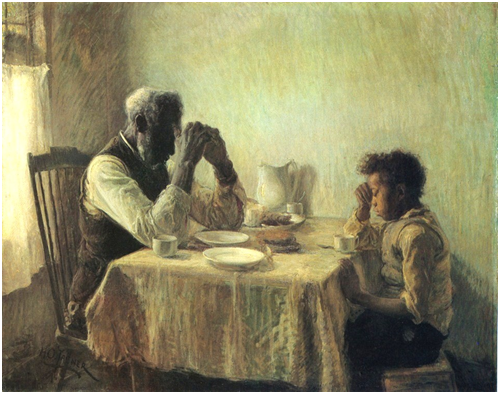
Winslow Homer, The Veteran in a New Field, 1865
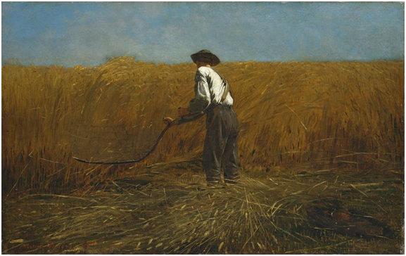
Winslow Homer, The Morning Bell, 1871
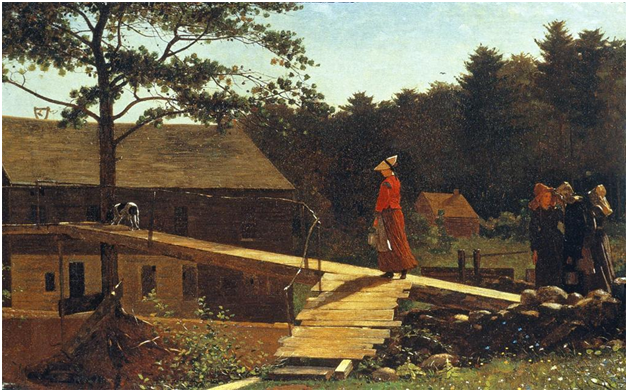
Winslow Homer, Snap the Whip, 1872
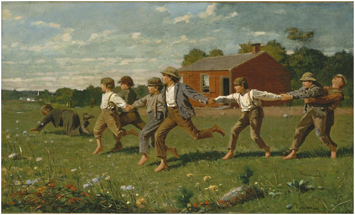
Winslow Homer, The Lifeline, 1884
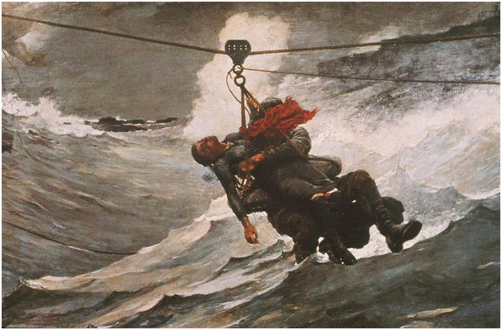
Winslow Homer, Gulf Stream, 1899
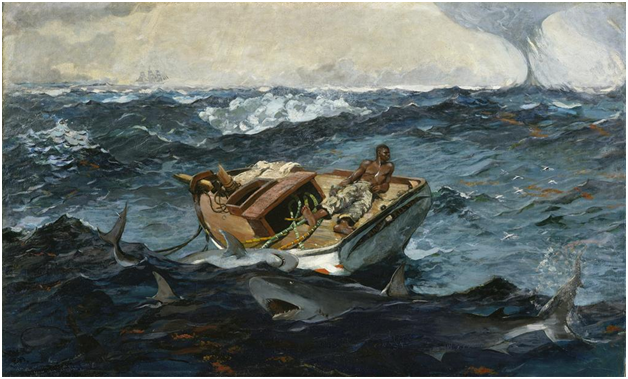
Thomas Eakins, The Champion Single Sculls (Max Schmidt in a Single Scull), 1871
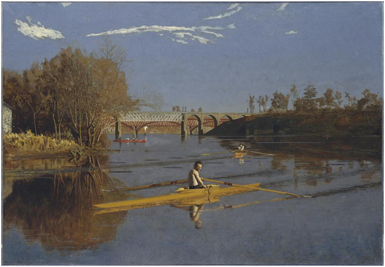
Thomas Eakins, The Gross Clinic, 1875
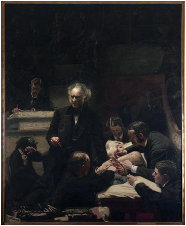
Thomas Eakins, The Swimming Hole, 1883
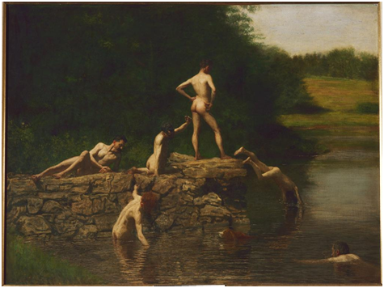
Thomas Eakins, Frank Hamilton Cushing, 1895
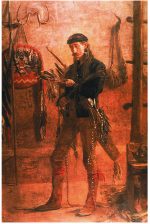
Thomas Anschutz, The Ironworker's Noontime, c. 1880
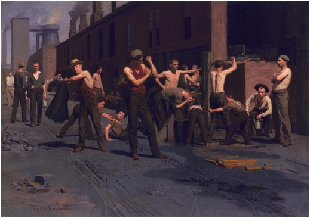
John Gast, American Progress, 1872
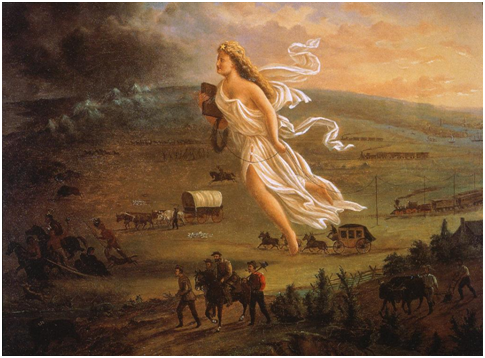
George Catlin, Bird's Eye View of Mandan Village, 1837-9
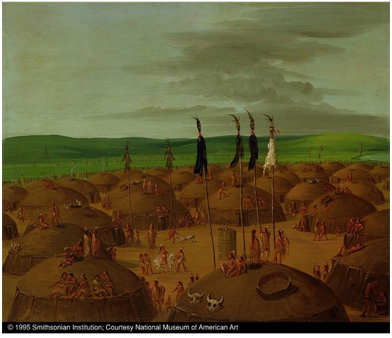
Henry Farny, Morning of a New Day, 1907
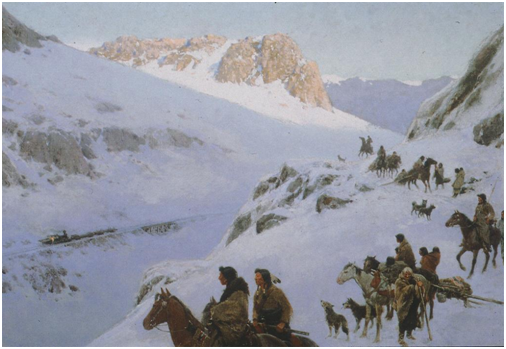
William Fuller, Crow Creek Agency, Dakota Territory, 1884
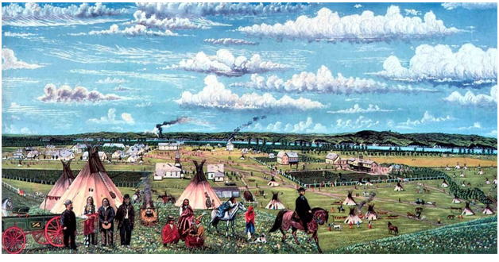
Charles Nahl, Sacramento Indian with Dogs, 1867
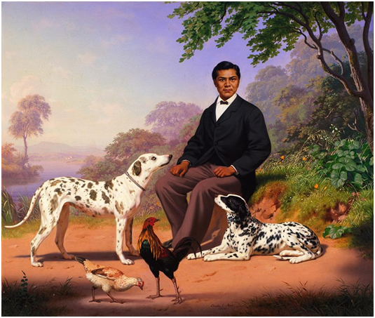
Etadleuh Doanmoe, Kiowa Dance, 1877
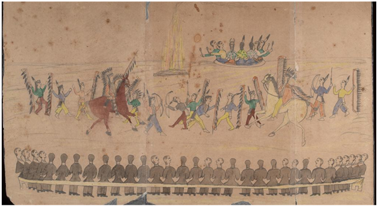
Benjamin Francis Johnson, Male and Female Students Reading in Class, Carlisle Indian School, c. 1900
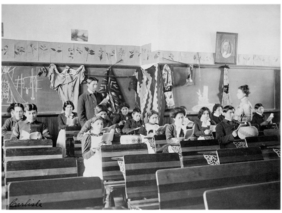